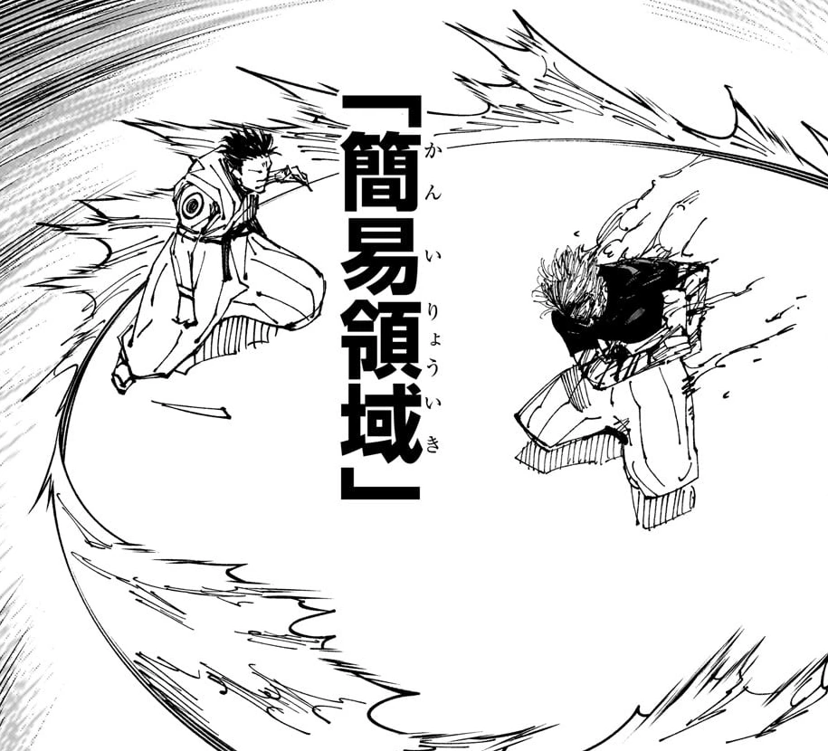
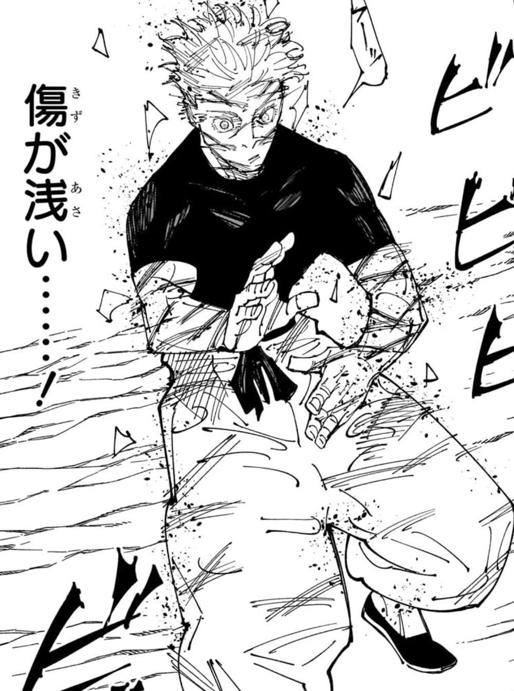

“ O Infinito existe em todos os lugares. ”
Satoru Gojo: Lista de Poderes
Como o feiticeiro mais poderoso da Era Moderna, não poderiam faltar arsenais de técnicas para utilizar em combate. Estarei listando o que o mais honrado tem de melhor.
Energia amaldiçoada
O seu título de o mais forte não é atoa, Gojo tem uma vasta quantidade de energia muito acima de quaisquer feiticeiros, desde os comuns até os mais poderosos. Um exemplo disso é quando se mostrou capaz de utilizar sua Expansão de Dominio 5 vezes ao dia enquanto normalmente só se é capaz de utilizar 1 vez, somente.
O controle sobre sua energia é tanta que foi possível limitar sua expansão a frações de segundos, além de uma capacidade incrível de regeneração a partir de energia reversa ao ponto de ser capaz de regenerar o próprio cérebro para resetar suas técnicas e evitar desgaste maior. É exímio no controle de energia positiva e negativa.
Fulgor Negro
Fulgor Negro, ou Kokusen, é uma técnica que pode ser usada por personagens além de Satoru Gojo; porém, é uma técnica difícil pelo alto nível de concentração que se exige. A técnica funciona quando se aplica energia amaldiçoada dentro do acerto físico num tempo menor do que 1 segundo, criando uma distorção no espaço com flashes negros, elevando a força do golpe em 2.5x e recebendo o benefício de ter sua saída de energia aumentada em 120%.
Gojo utiliza o Fulgor Negro para nós pela primeirava vez durante a luta contra Sukuna, acertando com um golpe devastador que nem o Rei das maldições esperava, o nocauteando por um breve período.
Energia reversa
Gojo nem sempre foi capaz de usar a energia reversa, até adolescência não conseguia compreender direito a técnica, mas isso muda após estar a beira da morte pela primeira vez contra o assassino de feiticeiros, Toji Fushiguro. Satoru finalmente consegue enxergar e compreender o núcleo de energia amaldiçoada, aprendendo o controle de energia positiva e negativa, além de conseguir se curar através da técnica.
Por mais que ele não seja o mais proeficiente em cura com a técnica, como sua colega Shoko, seus feitos de regeneração não são nem um pouco medianos. Gojo consegue utilizar da energia reversa para frequentemente restaurar seu cérebro dos efeitos negativos que o uso de suas técnicas inatas, evitando o desgaste e sempre resetando as habilidades. Outro exemplo de seu nível de regeneração, é dentro do Santuário Malevolente de Sukuna, se curando dos vários cortes com incrível velocidade para não morrer.
Técnicas anti-domínio
Domínio simples:
O Domínio Simples é uma técnica utilizada em Expansões de Domínio cujo objetivo é criar uma pequena barreira envolta do usuário que o protege de efeitos do domínio em que está, como o efeito de acerto garantido. Satoru normalmente não precisa usar essa habilidade, mas foi necessária na luta de expansão contra o Rei.
Emoção da Pétala decandente:
Diferente do domínio simples que manifesta seu próprio domínio, aqui o usuário se envolve com energia amaldiçoada para funcionar como uma armadura. A energia atua para automaticamente contra-atacar os golpes, podendo anular o dano recebido caso a energia do golpe seja pelo menos igual. Quando Gojo enfretou Sukuna, a técina só foi capaz de enfraquecer os golpes.
Técnicas inatas
Técnicas inatas são as habilidades únicas e inerantes gravadas no corpo, mais especificamente no cortex prefrontal do cérebro. Por serem técnicas que fazem parte do feiticeiro ao nascer, é praticamente impossível outro feiticeiro copiar ou replicar. A seguir são as técnicas inata do mais forte.
Ilimitado: conhecido também como Mugaken, essa técnica deverida de sua família o permite ter o controle próximo do absoluto do espaço através na energia amaldiçoada em nível atômico, resultando em outras técnicas derivadas.
Seios olhos: tem um papel fundamental trabalhando junto do Ilimitado para a manipulação precisa em nível atômico da energia amaldiçoada, utilizando o seu outro poder com mais eficiencia. Os seios olhos dão uma percepção muito maior ao usuário, permitindo enxergar o fluxo de energia, ler técnicas amaldiçoadas de outros para determinar sua função, diferenciar energia e identificar uma pessoa a partir dela.
Infinito: ou também chamado como Mugen, é a forma neutra do Ilimitado, sendo a mais conhecida habilidade ela é capaz de desacelerar qualquer coisa que tente tocar nele. Nada conseguirá chegar nele, pois chega em um ponto infinito de finitos espaços entre o usuário e algo que possa estar no trajeto dele. Obviamente, Gojo consegue definir o que tocar e classificar com base em massa, velocidade ou periculosidade o que o seu Infinito manterá longe.
Azul: é uma técnica subproduto da amplificação do Ilimitado com energia negativa, produzindo um vácuo no espaço. Nisso, o mundo é forçado a se corrigir e preencher o espaço vazio criado por ele, fazendo com que toda matéria no alcance do efeito se junte e seja atraída. Este poder funciona como um buraco negro, Gojo consegue criar e mover um ponto em que toda a matéria ao redor seja atraída e destruindo tudo ao redor como o forte ponto gravitacional que são os buracos negros.
Vermelho: sendo o total reverso da técnica Azul, inclusive formada por energia positiva, esta habilidade cria um imensa força repulsiva e dessa maneira repele toda a matéria por perto, basicamente o efeito contrario de sua outra habilidade. É dito que ela tem duas vezes mais poder destruitivo que a técnica anterior, o Azul.
Roxo: o ápice do conhecimento de sua técnica inata e as energias que estão no mundo Jujutsu, Gojo é capaz de utilizar o Roxo combinando a força repulsiva do Vermelho e atrativa do Azul para criar uma massa imaginária que destroi, desintegra tudo que estiver no alvo dela.


Expansão de Domínio: Vazio Infinito
“ Ryōiki Tenkai: Muryōkūsho ”
Expansão de Domínio é considerada a técnica suprema de um feiticeiro, o ápice da sociedade jujutsu. Se atinge esse nível a partir do usuário expandindo seu domínio inato com energia amaldiçoada enquanto constroi uma barreira para separar o espaço que ela irá agir. Dentro dessa barreira, o feiticeiro implantará sua habilidade por todo domínio.
No caso de Gojo, o seu domínio cria um espaço em que os afetados receberão todos os tipos de estímulos e informações percorrendo todo seu corpo de forma ininterrupta e infinita, limitando a capacidade de movimento e processamento de pensamentos. Os efeitos dependem da quantidade de tempo em que fica exposto a essa expansão, podendo ir de estado vegetativo por certo período, danos em partes do cérebro até praticamente morte cerebral.